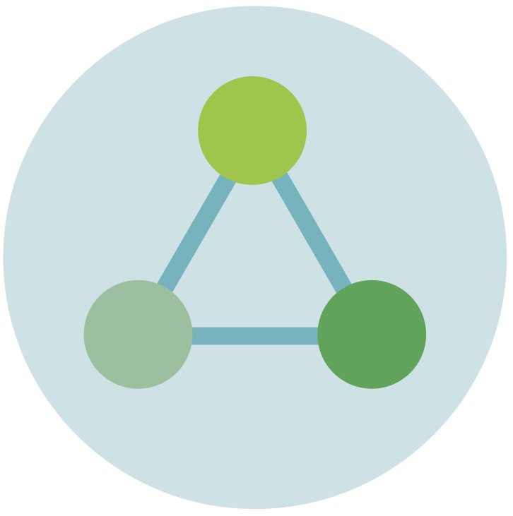

<div class="sidebar-sticky__items">
 <ul class="nav flex-column align-content-center">
  <li class="nav-item">
   <!-- <a class="nav-link fa fa-bar-chart" [ngClass]="{'active': page === '/dashboard'}" routerLink="dashboard">
   </a> -->
   
  </li>
  <li class="nav-item">
   <!-- <a class="nav-link fa fa-sitemap" [ngClass]="{'active': page === '/certification-types'}"
      routerLink="certification-types">
   </a> -->
   
  </li>
  <li class="nav-item">
   <!-- <a class="nav-link fa fa-folder" [ngClass]="{'active': page === '/issuer-reports'}" routerLink="issuer-reports">
   </a> -->
   
  </li>
 </ul>
</div>